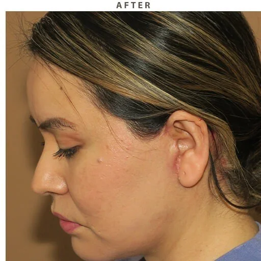
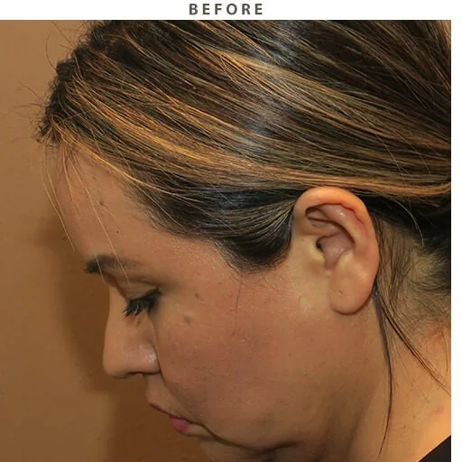

面部轮廓
Farah
#面部 #轮廓

<术前>

<术后>
下颌线精塑 ｜ 35 岁 · 马来西亚 · 术后 3 个月随访
项目：面部轮廓 ｜ 术式：下颌缘提升＋面部吸脂 ｜ 麻醉：静脉全麻 ｜ 恢复：1 周消肿 / 3 个月定型
我最在意的是下颌那一圈，侧面看像多出一层，正面又没有明确的折角，脸上半部分不错，下三分之一却总显得闷。
医生先说清楚：我的骨架没问题，是皮下脂肪厚加上皮肤轻度松弛。方案是吸掉下颌缘的堆积脂肪，同时配合提升收紧，让轮廓线显出来，而不是去动骨头。
三个月定型后，下颌到颈部的折角清楚了，侧脸线条利落。正面还是原来的脸型，但下三分之一不再显得沉重。